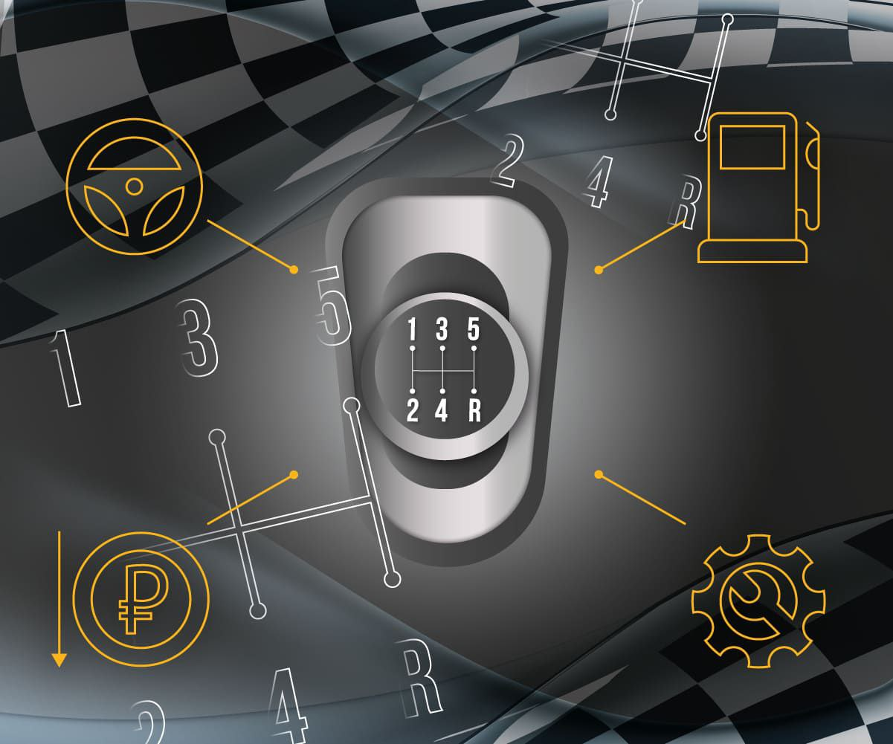

Описание
Передача крутящего момента осуществляется от двигателя через сцепление на первичный вал. В конструкции МКПП есть пары шестерён, которые между собой взаимодействуют. С помощью этих пар (ступеней) крутящий момент преобразуется для последующей передачи на колёса.
При начале движения водитель включает первую передачу. При этом выбирается пара шестерён с наибольшим передаточным отношением — ведущие колёса крутятся с намного меньшей частотой, чем коленчатый вал двигателя, в то же время крутящий момент на первой передаче будет достаточно высоким, чтобы обеспечить трогание с места, движение в гору или в тяжёлых дорожных условиях.
При разгоне автомобиля водитель последовательно включает высшие ступени, повышая частоту вращения ведущих колёс. На высокой скорости водитель включает прямую передачу, при которой частота вращения колёс определяется передаточным отношением главной передачи ведущего моста.
Если ни одна муфта с шестерней вторичного вала не соединена, коробка передач стоит на «нейтрали», двигатель отключён от механизмов трансмиссии, автомобиль стоит на месте или движется только силами инерции.
Преимущества
- Контроль: Водитель самостоятельно выбирает передачи, что дает полный контроль над динамикой автомобиля.
- Экономия топлива: При правильном использовании МКПП может обеспечить более экономичный расход топлива.
- Надежность: Менее сложная конструкция снижает вероятность поломок и упрощает обслуживание.
Недостатки
- Сложность для новичков: Необходимость одновременно управлять сцеплением и рычагом переключения может быть сложной для начинающих водителей.
- Утомляемость: В плотном городском трафике постоянное переключение передач может быть утомительным.